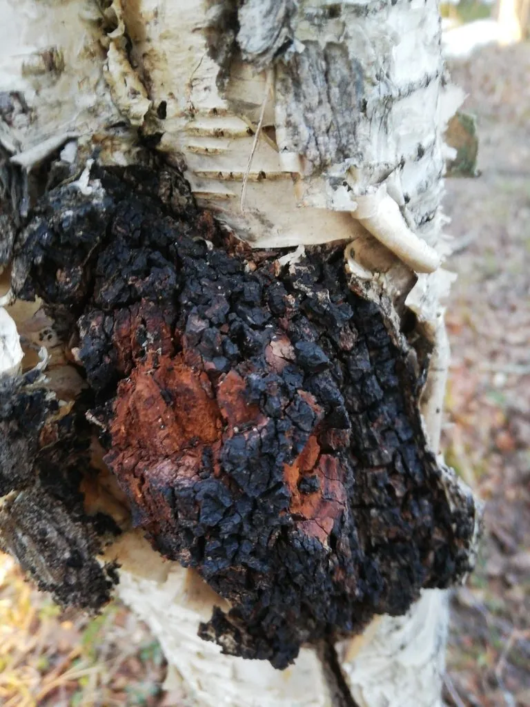

真菌 · 真菌界
桦褐孔菌 Inonotus obliquus

生长在白桦树干上的黑色瘤状菌块，俗称“白桦茸”，在俄罗斯和北欧被用作传统保健药材，不能直接食用。
- 分类
- 门担子菌门纲伞菌纲目锈革孔菌目科锈革孔菌科属纤孔菌属
- 栖息环境
- 白桦树干上，形成黑色瘤状菌块，生长缓慢
- 地理分布
- 俄罗斯西伯利亚、北欧、中国东北和北美北部的白桦林
- 保护级别
- 暂无评估（IUCN 未评估，野生资源受采集影响）
物种志
桦褐孔菌是担子菌门锈革孔菌目的木腐真菌，其菌核状子实体呈不规则的黑色瘤块，附着在白桦树干上，表面黑色、粗糙开裂，内部黄褐色至锈褐色，质地坚硬。它没有典型的菌盖和菌柄，外观像一块烧焦的木炭，因此在林间十分显眼，又被称为“黑桦茸”。
桦褐孔菌主要寄生在白桦树上，导致树干腐朽，分布于俄罗斯西伯利亚、北欧、中国东北和北美北部的白桦林中。它需要在低温环境中缓慢生长多年才能形成较大的瘤块。在俄罗斯和北欧，桦褐孔菌被用作传统草药，常被制成茶饮或提取物，但它的味道苦涩，不能直接食用，相关保健功效也需要科学验证。采集时要注意保护白桦林资源。
形态与习性
- 菌块不规则黑色瘤状，附着在白桦树干上
- 表面黑色，粗糙开裂，像烧焦的木炭
- 内部黄褐色至锈褐色，质地坚硬
- 生境白桦树干上，寄生并导致树干腐朽
- 生长速度低温环境下缓慢生长多年
- 利用方式制成茶饮或提取物，不能直接食用
- 注意事项保健功效需科学验证，采集应保护白桦林
趣味知识
- 桦褐孔菌的菌块黑如焦炭，长在白桦树干上，俗称“白桦茸”。
- 它需要低温环境，缓慢生长多年才能形成较大菌块。
- 白桦茸味道苦涩，不能直接食用，多制成茶饮或提取物。
- 采集白桦茸要注意保护白桦林资源。